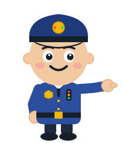

Drag to spin · Right-drag or two fingers to slide · Scroll or pinch to zoom · Tap anything
The 3D view stopped (the graphics chip needed a rest).
Experiment & Fix It: an optional challenge after Lesson 1. Build the traffic light, break it safely, find out why.
This text version is not the same as the interactive lab: you can read the circuit here, but you can’t build or test it.
Every LED has its own 330 Ω resistor. This is a learning simulation. Check real wiring with a knowledgeable adult before applying power.